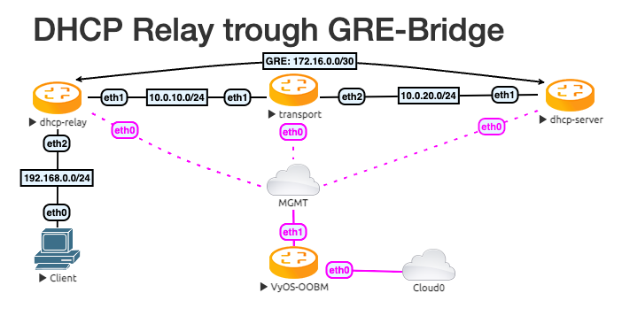

DHCP Relay trough GRE-Bridge
Testdate: 2023-05-11
Version: 1.4-rolling-202305100734
This simple structure shows how to configure a DHCP Relay over a GRE Bridge interface.
Topology
The topology has 3 VyOS routers and one client. Between the DHCP Server and the DHCP Relay is a GRE tunnel. The transport VyOS represent a large Network.
Configuration
First, we configure the transport network and the Tunnel interface.
Transport:
set interfaces ethernet eth1 address '10.0.10.254/24'
set interfaces ethernet eth2 address '10.0.20.254/24'
DHCP-Server
set interfaces ethernet eth1 address '10.0.20.10/24'
set interfaces tunnel tun100 address '172.16.0.1/30'
set interfaces tunnel tun100 encapsulation 'gretap'
set interfaces tunnel tun100 remote '10.0.10.10'
set interfaces tunnel tun100 source-address '10.0.20.10'
set protocols static route 0.0.0.0/0 next-hop 172.16.0.2
set protocols static route 10.0.10.0/24 next-hop 10.0.20.254
set protocols static route 192.168.0.0/24 next-hop 127.16.0.2
DHCP-Relay
set interfaces ethernet eth1 address '10.0.10.10/24'
set interfaces ethernet eth2 address '192.168.0.254/24'
set interfaces tunnel tun100 address '172.16.0.2/30'
set interfaces tunnel tun100 encapsulation 'gretap'
set interfaces tunnel tun100 remote '10.0.20.10'
set interfaces tunnel tun100 source-address '10.0.10.10'
set protocols static route 0.0.0.0/0 next-hop 172.16.0.1
set protocols static route 10.0.20.0/24 next-hop 10.0.10.254
After this, we need the DHCP-Server and Relay configuration. To get a testable result, we just have one IP in the DHCP range. Expand it as you need it.
DHCP-Server
set service dhcp-server listen-address '172.16.0.1'
set service dhcp-server shared-network-name DHCPTun100 authoritative
set service dhcp-server shared-network-name DHCPTun100 subnet 192.168.0.0/24 default-router '192.168.0.254'
set service dhcp-server shared-network-name DHCPTun100 subnet 192.168.0.0/24 range 0 start '192.168.0.30'
set service dhcp-server shared-network-name DHCPTun100 subnet 192.168.0.0/24 range 0 stop '192.168.0.30'
DHCP-Relay
set service dhcp-relay interface 'eth2'
set service dhcp-relay interface 'tun100'
Test the result
Ping the Client from the DHCP Server.
vyos@dhcp-server:~$ ping 192.168.0.30 count 4
PING 192.168.0.30 (192.168.0.30) 56(84) bytes of data.
64 bytes from 192.168.0.30: icmp_seq=1 ttl=63 time=1.02 ms
64 bytes from 192.168.0.30: icmp_seq=2 ttl=63 time=1.06 ms
64 bytes from 192.168.0.30: icmp_seq=3 ttl=63 time=1.21 ms
64 bytes from 192.168.0.30: icmp_seq=4 ttl=63 time=1.16 ms
--- 192.168.0.30 ping statistics ---
4 packets transmitted, 4 received, 0% packet loss, time 3004ms
rtt min/avg/max/mdev = 1.016/1.112/1.214/0.077 ms
And show all DHCP Leases
vyos@dhcp-server:~$ show dhcp server leases
IP Address MAC address State Lease start Lease expiration Remaining Pool Hostname
------------ ----------------- ------- ------------------- ------------------- ----------- ---------- ----------
192.168.0.30 00:50:79:66:68:05 active 2023/05/11 13:08:50 2023/05/12 13:08:50 23:59:16 DHCPTun100 VPCS